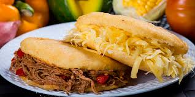

Arepa Venezolana
21/02/2019, Caracas/strong>
Hablar de La Arepa, es hablar de Venezuela... Parte de nuestra cultura y de la mesa de cada día, es nuestra expresión culinaria más autóctona, es el benefactor pan nuestro de cada día.
a arepa es una expresión nacional, en cualquier ciudad de Venezuela puede encontrarse. Su preparación se remonta a nuestros ancestros indígenas, que sembraron, recolectaron y procesaron el maíz. Es el resultado de una masa hecha de maíz cocido y molido, los indígenas, lo molían entre dos piedras lisas y llanas y luego creaban pequeñas bolas que asaban en un “aripo”, (especie de plancha un poquito curva fabricada en barro, que se utiliza para la cocción, también conocemos una variación de éste como “budare”) del nombre de este utensilio deriva la palabra “Arepa”, en la actualidad se utilizan planchas y parrillas de hierro para asar las arepitas en casa o restaurantes, aunque se puede encontrar aún el aripo de barro.
La Arepa es leal compañera del venezolano y puede encontrársele en la más honorable mesa, así como en la más humilde, en cualquier esquina de la ciudad, ó en el más pequeño de los pueblos, en restaurantes y casas, ó en las abundantes areperas de las diferentes ciudades venezolanas.